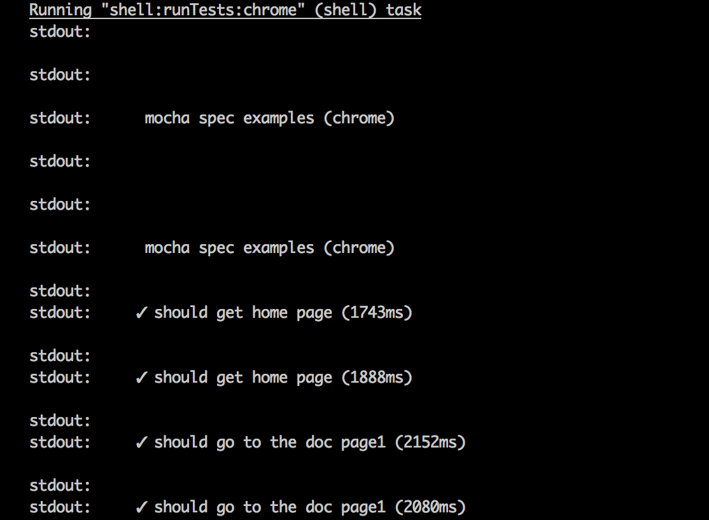
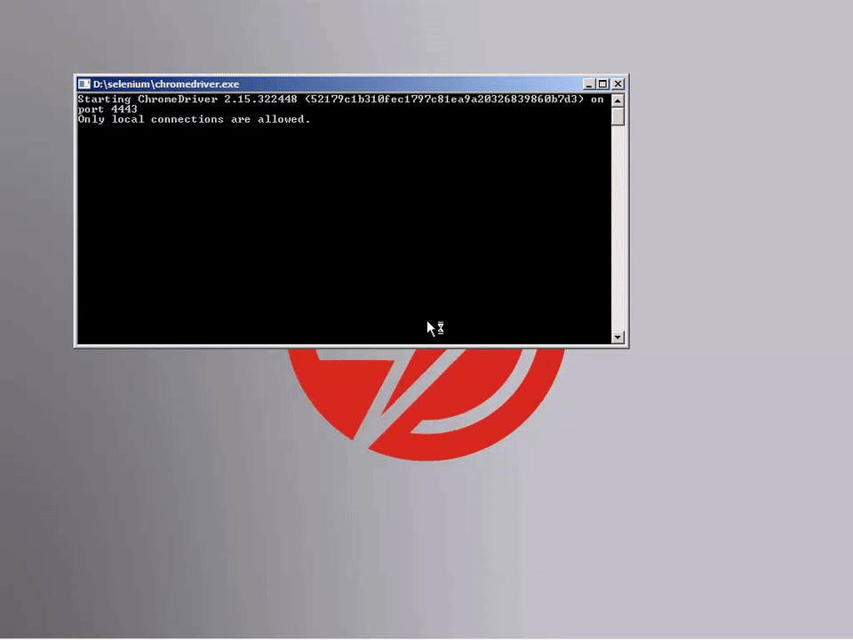

Gavin Mogan
Code Monkey @ Sauce Labs
Why not testing?
First Job?
- Low pay
- Develop Live
- No source control
- No testing
gavin.pl
use Inhouse::Library;
use JSON;
$user = Inhouse::Library::createUser({
username => "zoidberg",
password => "doctor"
});
print JSON::to_json($user);
gavin.js
const Users = require('./models/users.js');
Users.createUser({
username => "zoidberg",
password => "doctor"
}).then(function(user) {
console.log($user);
});
Gavin asks you
(Gavin draws the best)
Indirect Pros
- Learning Codebases
- New Hire can write tests
- Tests are always up to date when compared to documentation
- When/why is this code supposed to be used.
"We need time to test"
- Often leads to features being shipped that have never been used
- Blame others (QA) when things don't get caught
Why not testing first?
- Helps you think about design
- Lets you fail fast
- Write failing test first, then code
- Refactoring later isn't scary
How do I run tests?
Javascript
- grunt/gulp/etc
- mocha (with watch)
- qunit
- many many more
Ruby
- guard
- rake
- rspec
- minitest
- unittest
- many many more
Python
- nose
- unittests
- many many more
IDEs
- IdeaJ
- Sublime/Atom
- many many more
No, more automated!
Javascript
- Jenkins
- Travis-ci (.org)
- Circle CI
- Bamboo
- Team City
- Visual Studio Online (VSTS)
- more more more
Where do I start testing
- Convert simple scripts into tests
- Generally anything you care about
- API Return values
- Public methods
- Small discreet units
How do I test?
Really easy.
- Run some code
- Check the value
test "should save article with title" do
article = Article.new(title => "Gavin's Article")
assert article.save
end
test "should load with the same title" do
# create new article
created_article = Article.create(title => "Gavin's Better Article")
assert_not_null created_article
# load from DB
loaded_article = Article.find(created_article.id)
# check values
assert_not_null loaded_article
assert_equal loaded_article.title, "Gavin's Better Article"
end
E2E Tests
- Usually involve setting up a complete environment
- Websites will actually automate browsers for testing
- Mobile apps will test in emulators or real devices with real apps
- Talking to a fully setup backend. Hopefully not production code, but certainly possible
Example
https://github.com/saucelabs-sample-test-frameworks/JS-Mocha-WD.js


More Information
- Selenium - Website Testing / Automation
- http://www.seleniumhq.org/
- Appium - Mobile (And more) / Automation
- http://appium.io/
- Android
- IOS
- Universal Windows Platform
- Xamarin
- (Let other speaker talk about it)
Thanks
Gavin Mogan